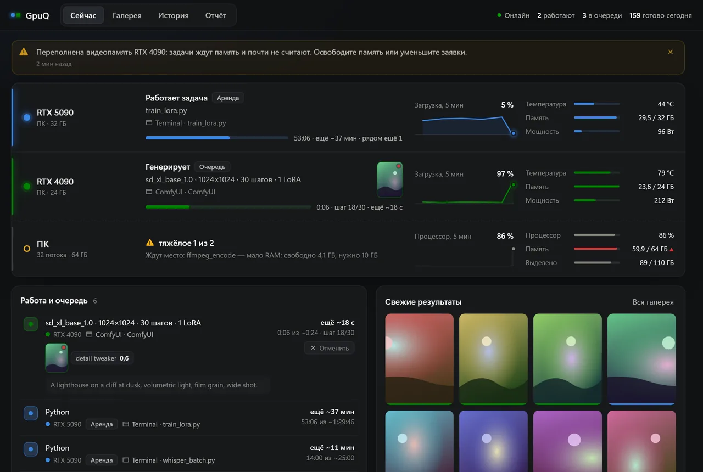
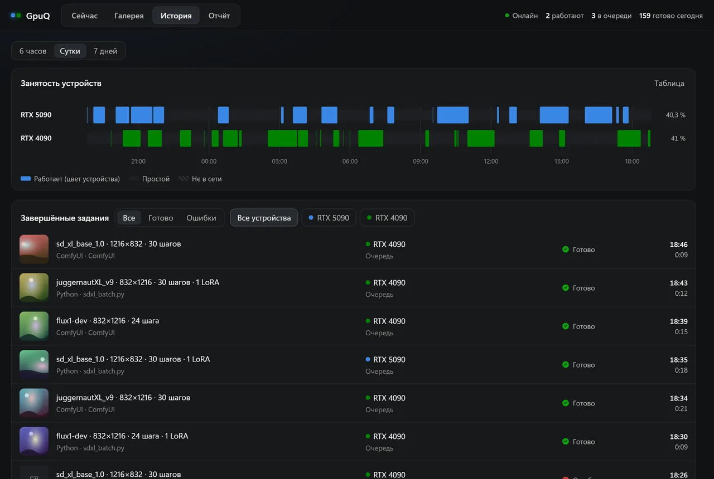
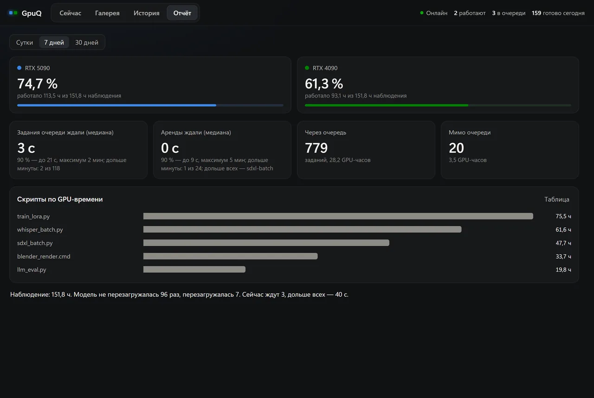
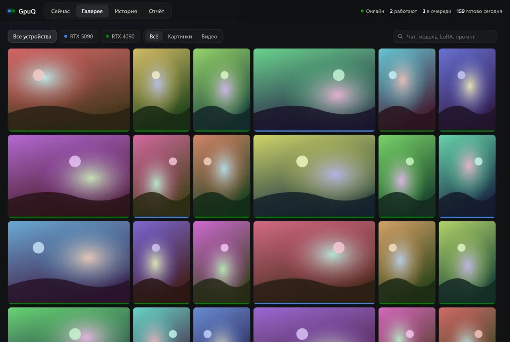

Одна видеокарта, много задач — и никакой драки за память
GpuQ заранее бронирует видеопамять и RAM под каждую задачу, которая приходит через него. Кому не хватило — ждёт своей очереди, а не отнимает память у соседа. Обучение, рендер и генерация реже тормозят друг друга, а панель и значки в трее показывают, кто что считает.
Панель GpuQ. На снимке условные данные: у вас будут ваши карты и задачи.
Знакомо?
Видеокарта — общая, а программы об этом не знают. Каждая берёт себе всё, что нужно, и узнаёт о соседях, когда уже поздно.
01
Две задачи на одной карте — обе ползут
Когда видеопамяти не хватает, драйвер может молча вытеснить часть в оперативную. Карта показывает почти 100 % загрузки, а считает в разы медленнее: по наблюдениям автора, в 3–5 раз. У нас обучение на 64 ГБ и видео на 29 ГБ сели на одну карту с 96 ГБ — и она 2 ч 18 мин почти не считала.
02
Задача зависла, а память занята
Скрипт повис после ошибки, но держит десятки гигабайт, и никто этого не видит. Однажды обучение провисело около трёх часов: карта простаивала, а память была занята.
03
ПК ушёл в подкачку
Обучению нужно 60 ГБ оперативной памяти, рядом стартует вторая тяжёлая задача — и Windows начинает писать память на диск. Всё тормозит, а причину приходится искать вручную.
Одна карта на 24 ГБ, четыре задачи
Слева — как всё идёт без диспетчера: каждая задача берёт своё, и в какой-то момент память кончается. Справа — те же задачи с GpuQ: кому не хватает места, тот ждёт.
Иллюстрация, а не замер: размеры, время и порядок ожидания упрощены. По наблюдениям автора, при переполнении видеопамяти карта работала в 3–5 раз медленнее; бенчмарка этой сборки на такую ситуацию нет.
Что умеет GpuQ
Небольшая служба, которая знает, сколько памяти у каждой карты и кто её занял, и умеет об этом рассказать.
Аренды видеопамяти
Задача говорит, сколько ей нужно. Память делится по заявкам с запасом: 2 ГБ, 6 ГБ рядом с чужим ComfyUI, 8 ГБ рядом с арендой от 50 ГБ. Нет места — задача ждёт, а в панели написано, чего не хватает.
Бронь оперативной памяти
--ram-mb 40000: аренда ждёт, пока свободно 40 ГБ плюс запас 8 ГБ. Пока задача набирает память, её заявка закрыта от остальных, и ПК реже уходит в подкачку.
Карта целиком для замеров
--exclusive для бенчмарков и замеров скорости: аренда ждёт, пока карту покинут все, и не пускает рядом другие аренды и задания очереди, чтобы цифры были честнее.
Три способа подключиться
Команда gpuq-run, библиотека для Python или обычный HTTP-запрос. Код менять не нужно: достаточно запустить программу через gpuq-run, и она увидит выданную карту (переменная CUDA_VISIBLE_DEVICES).
Панель вместо догадок
Ряд на каждую карту: кто арендовал и сколько держит, кривая загрузки, память, мощность, температура. История занятости за 7 дней и отчёт за 30: кто занимал карты дольше всех и сколько задачи ждали.
Значки в трее
Температура на цвете карты и полоска загрузки — видно без открытия окна. Левый клик открывает панель. Уведомления приходят пачками и без звука.
Сторож зависаний
Аренда держит память, а карта 15 минут простаивает. Видеопамять занята на 98 %, а мощность упала. Программа держит карту больше 10 минут, не взяв аренду. Об этом вы узнаете сразу, а не вечером.
Не рвёт идущую работу
Аренду живого процесса служба не снимает, даже если продления не доходят, потому что ПК ушёл в подкачку. Перезапуск и обновление службы не прерывают задачи под арендой: клиент сам дожидается её возвращения. Задания встроенной очереди ComfyUI при перезапуске ставятся заново.
Очередь ComfyUI (бета)
Укажите каталог ComfyUI — и тот же порт раздаст задания по картам с учётом свободной памяти, покажет превью шагов и соберёт галерею результатов. Модели и расширения остаются вашими.
Всё остаётся на вашем ПК
Служба слушает только 127.0.0.1 и отвечает на своё имя: страницы чужих сайтов не могут ни прочитать её, ни отправить команду. Данные лежат в SQLite в %LOCALAPPDATA%\GpuQ, в интернет ничего не уходит, а Uninstall.exe убирает файлы программы. Другие программы на этом же ПК к службе обратиться могут, поэтому для общих компьютеров она не рассчитана.
Как это работает
Установка занимает минуту. Дальше — одна приставка к команде, которой вы и так запускаете задачи.
Установите
Запустите установщик: права администратора не нужны, Python уже внутри. В трее появятся значки видеокарт.
Берите карту через GpuQ
Добавьте gpuq-run к команде или оберните код в with lease(...). GpuQ выдаст карту, когда хватит памяти.
Смотрите в панели
Левый клик по значку: кто что считает, кто ждёт и почему, как загружены карты сейчас и за неделю.
# обучение: 20 ГБ видеопамяти и 40 ГБ оперативной памятиgpuq-run --owner train --vram-mb 20000 --ram-mb 40000 -- python train.py
# замер скорости: карта целиком, рядом никогоgpuq-run --owner bench --exclusive -- python benchmark.py
# конкретная картаgpuq-run --card "RTX 4090" --vram-mb 8000 -- python render.py
# что сейчас на картахgpuq-status
import os, sys
sys.path.insert(0, os.path.expandvars(r"%LOCALAPPDATA%\Programs\GpuQ\app"))
from gpuq_client import lease
withlease(owner="finetune", vram_mb=20000, ram_mb=40000) as gpu:
os.environ["CUDA_VISIBLE_DEVICES"] = gpu.card # UUID выданной карты
os.environ["CUDA_DEVICE_ORDER"] = "PCI_BUS_ID"
train() # в долгом цикле вызывайте gpu.check()
POST http://127.0.0.1:8189/gpuq/lease
{"owner": "tool", "vram_mb": 8000, "pid": 1234}
→ {"waiting": true} повторяйте раз в 2 секунды→ {"token": "…", "card": "GPU-…"} карта выданаPOST http://127.0.0.1:8189/gpuq/lease
{"token": "…", "release": true}
Если указан pid, аренда живёт, пока жив этот процесс. Полное описание — в документации.
Панель, в которой видно всё
Открывается кликом по значку в трее — в окне Edge или Chrome без вкладок и адресной строки. Никаких отдельных серверов: панель отдаёт сама служба.
Сейчас: кто что считает
Состояние каждой карты словами, задача под арендой и сколько она держит, кривая загрузки за 5 минут, температура, память и мощность. Ряд «ПК» показывает процессор, оперативную и выделенную память — видно, почему тяжёлая задача ждёт.

Предупреждения: пока не поздно
Переполненная видеопамять и зависшая аренда — жёлтая полоса сверху и уведомление в трее без звука. Нехватка RAM видна в ряду «ПК» и в причине ожидания. В тексте сразу названо, на какой карте и какие задачи в этом участвуют.

История: занятость по минутам
Когда каждая карта работала, простаивала или была недоступна, за 6 часов, сутки и 7 дней. Ниже — завершённые задания с устройством, источником и длительностью.

Отчёт: куда уходит время карт
Занятость карт за 1, 7 и 30 дней, сколько задачи и аренды ждали карту (медиана, 90 %, максимум) и какие скрипты заняли больше всего GPU-часов. Отсюда видно, нужна ли вам вторая карта или просто другое расписание.

Галерея: результаты очереди ComfyUI
Если подключить ComfyUI, готовые картинки и видео собираются здесь с фильтрами по карте и типу, поиском по промпту и просмотром на весь экран. Без ComfyUI вкладка остаётся пустой.
Это договорённость, а не принуждение. Программы без аренды GpuQ не останавливает: он видит их на карте, показывает «мимо очереди» и предупреждает, если так длится больше 10 минут.
Порядок ожидания не строгий. Освободившееся место получает тот ждущий, кто первым спросит и кому оно подходит; большая заявка может ждать дольше маленьких. В анимации выше порядок упрощён.
Не для общих компьютеров. Служба отсеивает запросы со страниц чужих сайтов, но не проверяет, какая программа или какой пользователь Windows обращается к ней с этого же ПК.
Только NVIDIA и Windows (64 бита). Проверялось на Windows 11; на Windows 10 должно работать, но отдельно не проверялось. Карты AMD и Intel, Linux и macOS не поддерживаются. Нужен драйвер, при котором работает nvidia-smi.
Не управляет питанием и вентиляторами. Частоты, лимиты мощности и обороты GpuQ только читает через nvidia-smi. Менять их он не умеет и не станет.
Программа без цифровой подписи. Windows может показать предупреждение SmartScreen. Как сверить файл по SHA-256 и что внутри пакета — в разделе «Скачать».
Очередь ComfyUI — бета. Проверена меньше остального: в этой сборке — на простом тестовом графе, а на двух картах автора — на реальных задачах. С нестандартными установками возможны сюрпризы.
Нет гарантий. Программа бесплатна и распространяется «как есть». Исходники Python лежат внутри пакета в читаемом виде, чтобы можно было проверить, что она делает; это не открытая лицензия (условия — в LICENSE.txt).
Как это проверяли
Перед выпуском собранный пакет прошёл автоматические проверки на реальном ПК с двумя видеокартами NVIDIA под Windows 11. Цифры взяты из журнала последнего прогона. Не проверялось: открытие панели кликом по значку на экране, Windows 10, видеокарты AMD и Intel, несколько настоящих одинаковых карт, долгая работа этой сборки.
Что проверяли
Итог
Служба из сборки: аренды и запас видеопамяти, «карта целиком», места, gpuq-run, перезапуск, защита от чужих сайтов, чтение настоящих карт
33 из 33
Запрос, спрятанный в теле отклонённого запроса (чужой Origin или Host): не выполняется, соединение закрывается
14 из 14
Результаты с HTML, SVG и скриптами отдаются как файлы, а не как страницы на адресе службы
5 из 5
Запасы видеопамяти и RAM, зависшие аренды, переполнение, места, долгая работа без аренды: проверки рабочей версии против собранной копии
31 из 31
Клиент аренд при остановке и возвращении службы
8 из 8
Очередь ComfyUI: настоящий сервер, результат, миниатюра, галерея
9 из 9
Трей сам запускает службу, получает карты и останавливает только свою службу
7 из 7
Установка, обновление поверх, PATH, удаление
43 из 43
Остановка службы только из своей папки
5 из 5
Названия одинаковых карт и приоритет карт
7 из 7
Значки в трее: самопроверка (16 пунктов) и запуск в сессии пользователя
пройдено
Microsoft Defender (локальный движок, определения от 2026-10-30): установщик, архив, программа удаления и значок в трее; на других компьютерах облачные проверки могут вести себя иначе
угроз не найдено
Личные пути, имена и ключи в собственных файлах пакета (текст и байты программ GpuQ; встроенный Python и библиотеки не сканировались)
не найдены
Всего автоматических проверок
162 из 162
Скачать GpuQ 1.0.0
Windows (64 бита; проверялось на Windows 11), драйвер NVIDIA, около 30 МБ на диске. Выпуск от 31 октября 2026.
Рекомендуется
Установщик
Ставится за минуту, права администратора не нужны
Ярлык в меню «Пуск», автозапуск, команды gpuq-run в PATH
Файл не подписан и мало кому известен, поэтому Windows может показать окно «Windows защитил ваш компьютер», а браузер — сказать, что файл скачивают редко. Если вы решили запускать: в окне Windows «Подробнее» → «Выполнить в любом случае», в браузере «Сохранить» или «Оставить».
На компьютерах с политиками организации запуск может быть запрещён: тогда обратитесь к администратору.
Иногда и антивирус ложно срабатывает на неподписанный установщик: такие проверки смотрят на «внешность» файла, а не на то, что программа делает. Защиту при этом отключать не нужно: сверьте SHA-256, прочитайте исходники Python в папке app, а если файл попал в карантин, его можно отправить в Microsoft как ложное срабатывание.
Проверьте файл
В командной строке в папке со скачанным файлом:
certutil -hashfile GpuQ-1.0.0-Setup.exe SHA256
Результат должен совпасть со строкой выше. Это подтверждает, что файл не изменился после публикации, но не что он безопасен: код читаемый, проверять его вам. Суммы лежат и в файле SHA256SUMS.txt.
Что внутри пакета
GpuQ.exe — значки в трее и сторож службы
python\ — встроенный Python 3.10, psutil и Pillow
app\ — служба, панель и клиент аренд (исходники Python для чтения)
Нет. Установщик пишет только в вашу папку (%LOCALAPPDATA%\Programs\GpuQ по умолчанию) и в ветки реестра текущего пользователя: автозапуск, PATH и запись в «Параметры → Приложения».
Что будет с программами, которые про GpuQ не знают?
Они работают как раньше. GpuQ видит их на карте через nvidia-smi, учитывает занятую ими память при выдаче аренд и показывает в панели «мимо очереди». Принудительно он их не ограничивает и не останавливает.
Меняет ли GpuQ лимиты мощности, частоты или вентиляторы?
Нет. Он только читает показания карт. В пакете нет кода, который что-либо записывает в драйвер.
Что GpuQ отправляет в интернет?
Ничего. Служба слушает только 127.0.0.1, отвечает на запросы с именем хоста 127.0.0.1 или localhost и отклоняет запросы со страниц чужих сайтов. Ни аккаунта, ни телеметрии, ни проверки обновлений нет: новую версию вы скачиваете сами.
Работает ли это с PyTorch, TensorFlow, Blender, Unity, ComfyUI?
Любую программу можно запустить через gpuq-run: она получит карту через CUDA_VISIBLE_DEVICES. Для ComfyUI есть встроенная очередь (бета). Программы, которые не читают эту переменную и рисуют на карте по выбору системы (например, через Direct3D), GpuQ видит и показывает, но выбрать за них карту не может.
А если у меня две одинаковые карты?
Они получают номера: RTX 3090 #1 и RTX 3090 #2. Карту можно указать полным именем с номером (--card "RTX 3090 #2") или UUID. Проверялось на подмене ответа nvidia-smi, а не на двух настоящих одинаковых картах.
Что случится, если служба или ПК перезапустятся?
Аренды и история хранятся в базе и переживают перезапуск службы. Если служба молчит, клиент не обрывает задачу: он повторяет запрос и продолжает работу, когда служба вернётся. Задания встроенной очереди ComfyUI при перезапуске службы ставятся в очередь заново. После перезагрузки ПК процессов-клиентов уже нет, и их аренды служба снимает сама.
Как удалить?
«Параметры → Приложения → GpuQ» или Uninstall.exe в папке программы. Удаляются только файлы программы из списка установки; ваши файлы в той же папке остаются. Настройки и история в %LOCALAPPDATA%\GpuQ остаются; чтобы стереть и их, запустите Uninstall.exe /PURGE. Переносимую версию достаточно удалить вместе с папкой; если включали автозапуск, снимите галочку в меню значка в трее.
Файл не подписан. Как убедиться, что это безопасно?
Полной гарантии никто не даст, но проверить можно многое: сверьте SHA-256 с этой страницей, прочитайте документацию и исходники Python в папке app, убедитесь, что служба слушает только свой порт (netstat -ano | findstr 8189) и что установщик создал только то, что перечислено в install-manifest.txt. Права администратора установка не просит.
Почему программа бесплатная?
GpuQ вырос из очереди, которой автор делит две видеокарты на рабочем ПК, и оказался полезен не только ему. Условия — в файле LICENSE.txt: пользоваться бесплатно, гарантий нет.